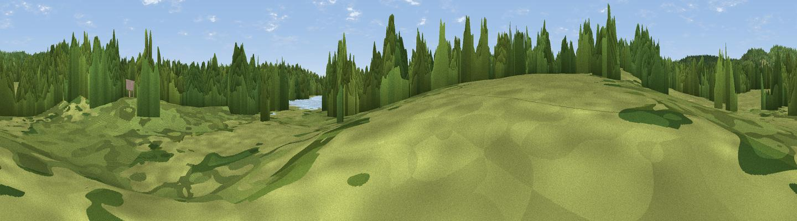

Observation Point
#45285 in England · top 92% of its area beats it · near Ide Hill · footpathWhere it is
The exact computed spot (TQ 49458 49367). Click the marker for map links.
Public access: a public right of way passes within 15 m of this spot. Computed from Natural England's CRoW access layer and OpenStreetMap rights of way — not the legal definitive map. Always verify locally.
The view, rendered

A 360° render of this exact spot computed from the terrain model, tree cover and land cover — summer colours, afternoon light, calibrated against photographs of famous viewpoints. Real trees, hedges and buildings will differ in detail.
The panorama
Grey silhouette: terrain skyline in each direction (720 bearings, Earth curvature and refraction included). Dashed green: skyline with trees (+15 m) and buildings (+8 m) as obstacles. Blue strip: how far the ground is visible on each bearing.
Where the view opens
Wedge length = distance to the farthest visible ground on that bearing (vegetation-aware). Rings at 10, 25 and 50 km.
What fills the view
52% woodland · 37% grassland · 9% cropland · 3% water ·
Angular shares of the visible panorama (visual magnitude), not map area. Landscape diversity 0.45 (0–1 Shannon).
Key numbers
More beautiful places nearby
The staircase of upgrades: each row has a higher view potential than everything closer. Driving times are estimates from straight-line distance, calibrated against real road routing — check an actual route before setting out.
| Place | Direction | Drive | Score |
|---|---|---|---|
| Bird Watching | SE · 0 km | ~1 min | 16.6 |
| Viewpoint near Ide Hill | N · 2 km | ~6 min | 54.0 |
| Viewpoint near Ide Hill | NNE · 3 km | ~6 min | 62.7 |
| Viewpoint near French Street | NW · 3 km | ~8 min | 64.5 |
| Viewpoint near Shipbourne | ENE · 8 km | ~17 min | 66.2 |
| Viewpoint near Lower Kingswood | W · 26 km | ~42 min | 67.7 |
| Brightling Obelisk [Brightling Down] | SSE · 33 km | ~51 min | 69.1 |
| Viewpoint near Coldharbour | W · 35 km | ~54 min | 70.0 |
51.22393, 0.13893 · source: osm viewpoint · position refined by local search. Computed location — check access rights before visiting.